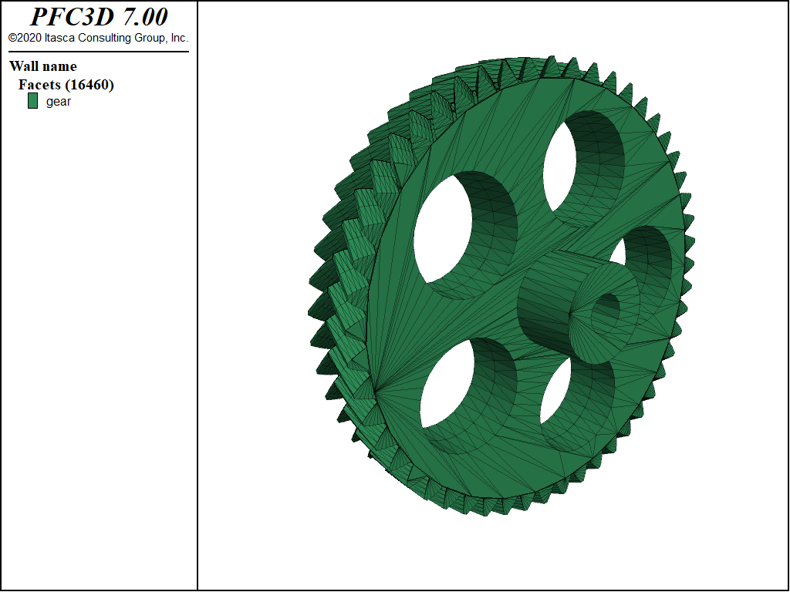

wall import 命令
语法
- wall import keyword ... <range>
-
导入墙。墙可直接从几何逻辑支持的文件（即 .stl 或 .dxf 文件——见 导入几何对象（
geometry import） 命令）或直接从几何对象导入。墙导入通过从种子面片开始缝合{二维中顶点连接；三维中边连接}的面片（即{二维中线段；三维中三角形}）来完成。除非给出 seed 关键字，否则种子面片取为落在指定范围内的第一个{二维中边；三维中多边形}。表面必须是流形（即面片不能相互穿插或接触其他面片）且可定向（即表面{二维中顶点连接；三维中边连接}）。所有面片都必须落在模型域内。注意
- 在导入墙之前必须指定模型域。
- 在循环计算期间，只能在循环点 0 之前创建墙（即在计算时步时）。
- from-geometry s
要导入的几何集名称。可提供以下关键字：
- clean
若操作成功，则在导入墙后删除几何集。若与 nothrow 关键字一起给出，则无论是否导入所有面片，都将删除几何集。
- keepid
指定面片 ID 将设置为几何{二维中边；三维中多边形}的 ID。
- seed i
用于开始缝合过程的几何{二维中边；三维中多边形}的 ID。该关键字可与 nothrow 关键字一起使用，以便从包含多个互不相交网格的几何集导入。
- group s <slot slot > <facet> ...
为所创建的墙或其组成面片，在槽位 槽位（slot） 处赋予分组名称 s。 若未给出 slot 关键字，则将分组名称设置在 默认（Default） 中。 可选的 facet 关键字指定将分组赋予面片而非墙。
- id ID 标识（id ）
墙 ID。若未指定，则墙 ID 设置为下一个可用 ID。
- name s
墙的名称。若未指定，则墙名称设置为文件名或几何集名称。
- skip-errors
可选关键字，表示即使检测到非流形条件或有点落在模型域之外，导入仍将继续。有问题的面片将被忽略。
用法示例
以下是使用 导入墙体（wall import） 命令的示例，可通过该命令导入复杂单元的几何形状并将其纳入模型。
model new
model domain extent -2 2
wall import filename 'gear.stl' skip-errors id 100
wall rotate axis 1 0 0 angle 90 point 0 0 0
wall group 'gear' range set id 100


图 1：使用 导入墙体（wall import） 命令的示例。
请访问“螺带混合机（Ribbon Blender）”教程示例，了解 导入墙体（wall import） 命令的应用示例。
另请参见
| 这些内容对您有帮助吗？… | FLAC3D © 2019, Itasca | 原文更新于 2020 年 10 月 8 日 |